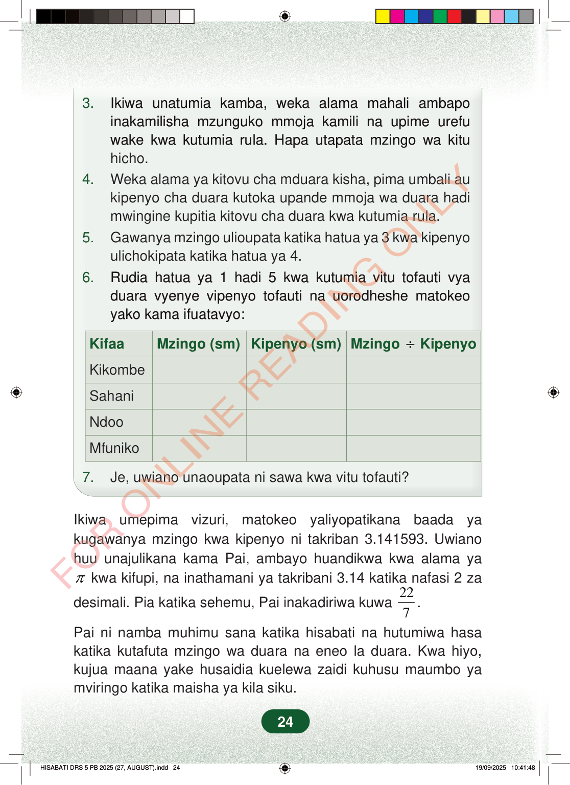

3.Ikiwa unatumia kamba, weka alama mahali ambapoinakamilisha mzunguko mmoja kamili na upime urefuwake kwa kutumia rula. Hapa utapata mzingo wa kituhicho.4.Weka alama ya kitovu cha mduara kisha, pima umbali aukipenyo cha duara kutoka upande mmoja wa duara hadimwingine kupitia kitovu cha duara kwa kutumia rula.5.Gawanya mzingo ulioupata katika hatua ya 3 kwa kipenyoulichokipata katika hatua ya 4.6.Rudia hatua ya 1 hadi 5 kwa kutumia vitu tofauti vyaduara vyenye vipenyo tofauti na uorodheshe matokeoyako kama ifuatavyo:KifaaMzingo (sm)Kipenyo (sm)Mzingo÷KipenyoKikombeSahaniNdooMfuniko7.Je, uwiano unaoupata ni sawa kwa vitu tofauti?Ikiwa umepima vizuri, matokeo yaliyopatikana baada yakugawanya mzingo kwa kipenyo ni takriban 3.141593. Uwianohuu unajulikana kama Pai, ambayo huandikwa kwa alama yaπkwa kifupi, na inathamani ya takribani 3.14 katika nafasi 2 zadesimali. Pia katika sehemu, Pai inakadiriwa kuwa227.Pai ni namba muhimu sana katika hisabati na hutumiwa hasakatika kutafuta mzingo wa duara na eneo la duara. Kwa hiyo,kujua maana yake husaidia kuelewa zaidi kuhusu maumbo yamviringo katika maisha ya kila siku.24
3. Ikiwa unatumia kamba, weka alama mahali ambapo inakamilisha mzunguko mmoja kamili na upime urefu wake kwa kutumia rula. Hapa utapata mzingo wa kitu hicho. 4. Weka alama ya kitovu cha mduara kisha, pima umbali au kipenyo cha duara kutoka upande mmoja wa duara hadi mwingine kupitia kitovu cha duara kwa kutumia rula. 5. Gawanya mzingo ulioupata katika hatua ya 3 kwa kipenyo ulichokipata katika hatua ya 4. 6. Rudia hatua ya 1 hadi 5 kwa kutumia vitu tofauti vya duara vyenye vipenyo tofauti na uorodheshe matokeo yako kama ifuatavyo:
Kifaa Mzingo (sm) Kipenyo (sm) Mzingo ÷ Kipenyo
Kikombe
Sahani
Ndoo
Mfuniko
7. Je, uwiano unaoupata ni sawa kwa vitu tofauti?
Ikiwa umepima vizuri, matokeo yaliyopatikana baada ya kugawanya mzingo kwa kipenyo ni takriban 3.141593. Uwiano huu unajulikana kama Pai, ambayo huandikwa kwa alama ya
π kwa kifupi, na inathamani ya takribani 3.14 katika nafasi 2 za
desimali. Pia katika sehemu, Pai inakadiriwa kuwa 22
7 .
Pai ni namba muhimu sana katika hisabati na hutumiwa hasa katika kutafuta mzingo wa duara na eneo la duara. Kwa hiyo, kujua maana yake husaidia kuelewa zaidi kuhusu maumbo ya mviringo katika maisha ya kila siku.
24
3.Ikiwa unatumia kamba, weka alama mahali ambapo inakamilisha mzunguko mmoja kamili na upime urefu wake kwa kutumia rula.Hapa utapata mzingo wa kitu hicho.4.Weka alama ya kitovu cha mduara kisha, pima umbali au kipenyo cha duara kutoka upande mmoja wa duara hadi mwingine kupitia kitovu cha duara kwa kutumia rula.5.Gawanya mzingo ulioupata katika hatua ya 3 kwa kipenyo ulichokipata katika hatua ya 4.6.Rudia hatua ya 1 hadi 5 kwa kutumia vitu tofauti vya duara vyenye vipenyo tofauti na uorodheshe matokeo yako kama ifuatavyo:KifaaMzingo (sm)Kipenyo (sm)Mzingo ÷ KipenyoKikombeSahaniNdooMfuniko7.Je, uwiano unaoupata ni sawa kwa vitu tofauti?Ikiwa umepima vizuri, matokeo yaliyopatikana baada ya kugawanya mzingo kwa kipenyo ni takriban 3.141593.Uwiano huu unajulikana kama Pai, ambayo huandikwa kwa alama ya π kwa kifupi, na inathamani ya takribani 3.14 katika nafasi 2 za desimali.Pia katika sehemu, Pai inakadiriwa kuwa 22/7.Pai ni namba muhimu sana katika hisabati na hutumiwa hasa katika kutafuta mzingo wa duara na eneo la duara.Kwa hiyo, kujua maana yake husaidia kuelewa zaidi kuhusu maumbo ya mviringo katika maisha ya kila siku.